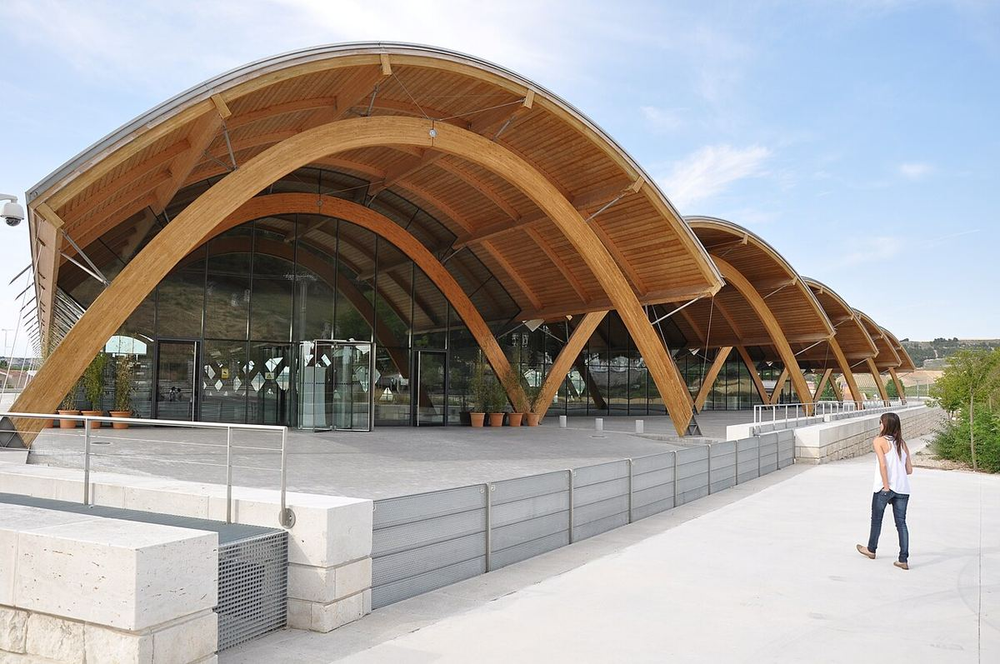

ROSADO
Bodega fundada en Peñafiel en 1927 por un grupo de viticultores, con galerías excavadas bajo el cerro del castillo y presencia también en Rueda.

Protos tiene su origen en 1927, cuando un grupo de once viticultores de Peñafiel (Valladolid) creó la Bodega Ribera Duero para elaborar y comercializar en común el vino de la zona. Es, por tanto, una de las bodegas más antiguas de la actual denominación. Cuando en 1982 se creó la Denominación de Origen Ribera del Duero, la bodega adoptó la marca Protos, palabra griega que significa «primero», en alusión a su papel pionero.
Una de sus señas de identidad son las galerías subterráneas excavadas bajo el cerro sobre el que se alza el castillo de Peñafiel, donde tradicionalmente se han criado los vinos en barrica. En 2008 se inauguró una nueva bodega diseñada por el estudio del arquitecto Richard Rogers, con cubiertas abovedadas de madera y teja, situada al pie del castillo.
Protos trabaja con viñedos propios y con uva de numerosos viticultores de la zona, con la Tinto Fino (Tempranillo) como variedad principal. Su gama de Ribera del Duero recorre todas las categorías, desde el tinto Roble hasta Crianza, Reserva y Gran Reserva, junto a selecciones especiales.
La bodega elabora además vinos blancos en la Denominación de Origen Rueda, a partir de Verdejo, en una bodega propia en esa zona. El estilo general es el de vinos de perfil clásico y amplia distribución, fáciles de encontrar en tiendas y restaurantes.
Ofrece visitas guiadas a la bodega moderna y a las galerías subterráneas bajo el castillo, con cata, previa reserva.